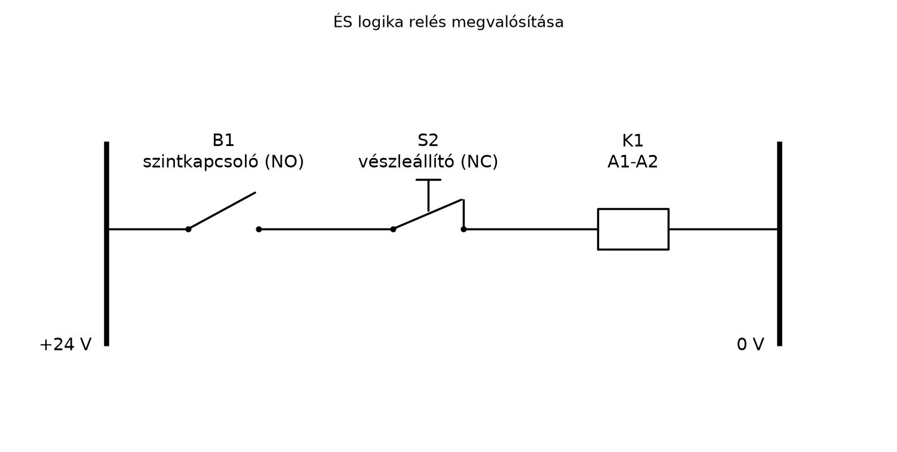
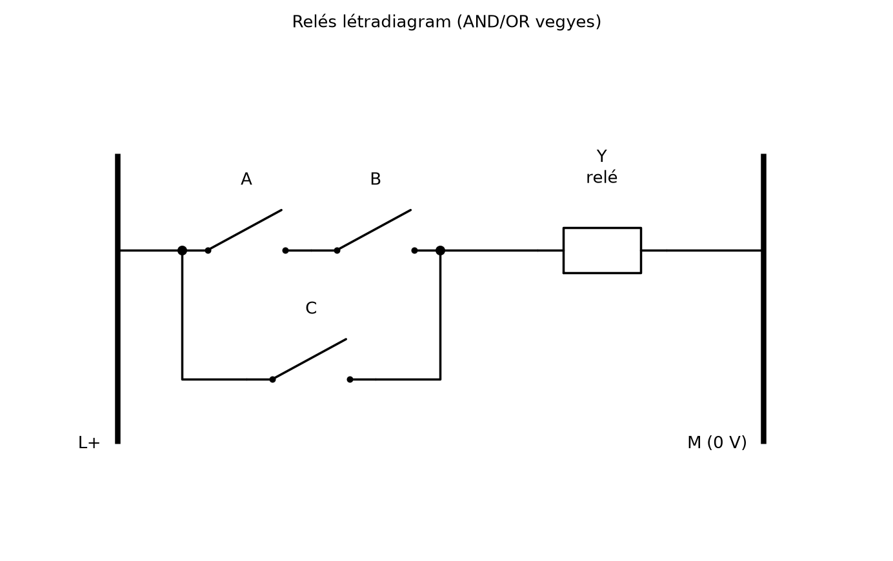

Statikus változat (mint a PDF-ben)
Egyre több gépen és épületautomatikai rendszeren találkozol
PLC-vel (programozható logikai vezérlő),
érintőképernyős HMI-panellel vagy okos relével. Ha
elromlik egy motor, ami „kétkezes indítással” biztosított préshez van
beépítve, a hibát csak akkor tudod megkeresni, ha érted: a vezérlés
valójában egy ÉS kapcsolatot valósít meg a gombok
között. Ha a LED-es kijelzőn 0x3F értéket látsz, és nem
tudod, hogy az a 63-as szám, nem tudod beállítani a paramétereket. A
digitális logika nem elvont informatika: ez a relés kapcsolások és a
modern vezérlések közös nyelve.
Nézzünk egy klasszikus mágneskapcsoló-vezérlést. Tegyük fel, hogy egy szivattyút csak akkor szabad indítani, ha a biztonsági kapcsoló (pl. vészleállító, ami alaphelyzetben enged) zárt ÉS a szintérzékelő is azt jelzi, hogy van elég víz. Ha van feszültség, a tekercs meghúz. Ez a kapcsolás így néz ki:

A tápfeszültséget itt 24 V DC-nek jelöltük, de a logika gondolati váza ugyanaz, akár 230 V-os vezérlést nézünk (jogosult személy által), akár tanműhelyi törpefeszültséget. A lényeg: a nyitott és zárt kontaktusokból matematikai kapcsolat lesz.
A relé csak két állapotot ismer: be van húzva (1) vagy elengedve (0). A PLC-k és a digitális elektronika is ezen a két állapoton alapszik.
Definíció. A kettes (bináris)
számrendszer alapszáma 2, a használt számjegyek: 0
és 1. A helyiértékek jobbról balra
növekednek. Definíció. A tizenhatos
(hexadecimális) számrendszer alapszáma 16, a számjegyek:
0–9, majd A (10), B
(11), C (12), D (13), E (14),
F (15). A hexadecimális rövidítésére gyakran
0x előtagot írnak (pl. 0x3F), vagy alsó
indexbe 16 kerül:
.
Miért pont a hexadecimális? Mert 4 bit (négy bináris
számjegy) pontosan egy hexadecimális számjegyet ad ki. Ez óriási
tömörítés: a 8 bites 11001010 kettes szám hexadecimálisan
csak 0xCA.
Szabály. Átváltás 10-esből 2-esbe (maradékos osztás). Osszuk maradékosan a számot 2-vel, amíg a hányados 0 nem lesz. A maradékokat alulról felfelé kell olvasni!
Példa. Alakítsuk át a 202-t binárisra:
A maradékokat alulról felfelé olvasva: .
Szabály. Átváltás 2-esből 16-osba. Csoportosítsd a biteket jobbról 4-esével, és írd át mindegyiket 16-os alakra. (Ha a bal oldalon nem jön ki a 4 bit, pótold 0-val!)
Példa.
.
Csoportosítás: 1010 és 1101. 1010
= A, 1101 = D. Tehát
.
Ellenőrzés 10-esben:
,
,
összesen
.
A digitális logikában a kimenet (pl. a motor indítójele) a bemenetek (pl. gombok) kombinációjától függ. A legegyszerűbb kapukat relékkel is meg tudod valósítani.
Definíció. Az igazságtábla olyan táblázat, amely a bemeneti változók minden lehetséges kombinációjához megadja a kimeneti értéket.
ÉS (AND): A kimenet akkor 1-es, ha minden bemenet 1-es. Kapcsolási jele: . Relés megvalósítás: soros kontaktusok.
VAGY (OR): A kimenet akkor 1-es, ha legalább az egyik bemenet 1-es. Kapcsolási jele: . Relés megvalósítás: párhuzamos kontaktusok.
NEM (NOT): A kimenet a bemenet ellentettje. Jele: . Relés megvalósítás: nyugalmi érintkező (NC kontaktus). Amikor a relé nincs meghúzva, a kontaktus zárva van (1), ha meghúz, bont (0).
Példa az ÉS működésére. = vészleállító rendben (0 = lenyomva, 1 = kihúzva), = szint van (1 = van). A motornak (Y) akkor szabad járnia, ha mindkettő 1. .
A táblázat négy sora a két bemenet (A, B) négy kombinációja, az oszlopok a kapuk kimenetei; az utolsó sor a relés megvalósítást adja (NO = záró, NC = bontó érintkező, a soros kapcsolás ÉS, a párhuzamos VAGY). Az ÉS kimenete csak az 1–1 sorban 1, a VAGY-é csak a 0–0 sorban 0, a XOR-é akkor 1, ha a két bemenet különböző. A HTML-kiadásban az A és B bemenetre kattintva minden kapu relés létrafoka átvált: az áramot vivő ág kiemelődik, a lámpa az 1-es kimenetnél világít, és a táblázat aktuális sora kijelölődik.
A PLC-programozásban ezt a nyelvet létradiagramnak (Ladder Diagram, LD) hívják. A PLC bemenetei ugyanúgy kontaktusokként jelennek meg, a kimenetei pedig tekercsként.
Relé logika:
A és B kontaktus sorosan
= ÉSA és B kontaktus
párhuzamosan = VAGYA kontaktus bontó (NC) = NEMPLC logika (LD): Ugyanezt a grafikus programban rajzolod meg, a PLC processzora a programot ciklikusan hajtja végre (bemenetek beolvasása → logika kiértékelése → kimenetek írása), a kimeneteket relé- vagy tranzisztoros kimeneti fokozat kapcsolja.

Ebben a rajzban az A és B sorosan van,
tehát A ÉS B, de ezzel párhuzamosan van a C,
tehát a teljes függvény:
.
Számítás. Logikai függvény értelmezése. Adott a kapcsolási rajz: és soros, ezzel párhuzamosan , az egész elé kötve (azaz sorosan D is van). Mennyi a kimenet ha ? 1. lépés: . 2. lépés: . 3. lépés: . A motor jár. ∎
Eddig olyan áramköröket néztünk, ahol a kimenet csak a pillanatnyi bemenettől függ. Ezt hívják kombinációs logikának. A gyakorlatban szükség van arra, hogy egy rendszer „emlékezzen” egy állapotra. Ez a sorrendi logika.
A leggyakoribb memóriaelem két stabil állapottal rendelkezik. A relés vezérlésben ezt hívják önfenntartásnak.
Szabály. 1. , (behúz). 2. , az előzőben marad (tartás!). 3. , (elenged). 4. , : az elméleti (kapukból épített) SR tárolónál tiltott állapot. A relés önfenntartásban viszont a sorosan előre kötött STOP (S0) bontó miatt a törlés biztosan érvényesül (törlés-domináns tároló) – a biztonságos vezérlést mindig így kell kialakítani; a PLC-ben ennek az RS (reset-domináns) blokk felel meg (ellenőrizendő: a PLC-gyártó blokkdefiníciója).
Valósítsuk meg relés önfenntartással:

Az időzítő (Timer) olyan logikai elem, amely az indítás után egy beállított késleltetéssel állítja csak a kimenetét. (Például a csillag-delta indításnál az átkapcsolás 5 másodperc után történik ezzel.) A számláló (Counter) pedig impulzusokat számol, és a beállított érték elérése után ad ki logikai jelet (pl. minden 10. becsomagolt doboz után).
Egy mechanikus présgépnél a balesetek elkerülésére kétkezes vezérlést írnak elő (kétkezes vezérlőeszköz: MSZ EN ISO 13851, ellenőrizendő). A gép csak akkor indul, ha a bal ÉS a jobb gombot egyszerre, legfeljebb 0,5 másodperc különbséggel nyomja meg a kezelő. Ha az egyik gomb megragad zárva, a gép nem indul el újra, amíg mindkettőt el nem engedik.
A szerelőnek nem elég tudnia, hogy „a relé tekercse meghúz”, hanem a
kapcsolást mint logikai rendszert kell látnia:
– ez azonban csak az ÉS-kapcsolat; a kétkezes vezérlés ennél több: a 0,5
s-os egyidejűségi időablak és az „újraindítás csak mindkét gomb
elengedése után” feltétel sorrendi (időzítős, memóriás) logikát kíván.
Ezt minősített kétkezes biztonsági modul valósítja meg, nem két soros
nyomógomb. Ha a hibakeresés során (jogosult személy, mérés előtti
műszerellenőrzéssel) azt méri, hogy az egyik gomb kimenetén hiányzik a
vezérlőfeszültség, akkor a logikai ÉS egyik bemenete 0,
tehát a kimenet is 0. A relé nem húzhat meg.
Hiba. Egy szerelő átkötötte a hibás bal oldali gombot, hogy „kipróbálja a sajtót”. A logikai függvénye így lett. A gép egy kézzel is indult. Ez súlyos balesetveszély! Védelmi áramköröket tilos átkötni!
A bontó/záró érintkezők összekeverése a PLC-ben. A relés kapcsolásban a vészstop gomb fizikailag NC (bontó) kontaktus, sorba kötve a tekerccsel. A vészleállító NC érintkezője huzalozottan (biztonsági relén vagy biztonsági PLC-n át) bontja a mágneskapcsoló tekercskörét; a szabványos PLC csak a nyugtázó jelet kapja. A vészleállítás nem függhet a szabványos PLC programjától. A programban a bontó (NC) terepi érintkező bemenetét ZÁRÓ programkontaktussal (‑| |‑) kell kiértékelni: a bit alaphelyzetben 1, a rung vezet; a gomb megnyomása vagy vezetékszakadás a bitet 0-ra viszi, és a rung bont. Ha a programba bontó kontaktust (‑|/|‑) rajzolnak, a logika megfordul – ez a tipikus hiba. A vészleállítás ettől függetlenül huzalozottan történik, ezért a programbeli hiba itt a jelzést, nem a leállítást rontja el (ellenőrizendő: MSZ EN 60204-1, MSZ EN ISO 13850).
A hexadecimális A–F értékek elfelejtése. Az
ember ösztönösen úgy gondolja, hogy A = 1, mint az
osztályzatoknál. Valójában A = 10. Ez gyakori hiba a
frekvenciaváltók vagy PLC-k paramétereinek beállításakor (pl. a
0x1F nem 19, hanem 31).
Az önfenntartó kontaktus elhagyása. Ha a start gomb impulzusszerű (nyomógomb), az SR flip-flop „memóriája” nélkül a motor csak addig jár, amíg a gombot nyomva tartod. A szivattyú leáll, amint elengeded a gombot. Mindig ellenőrizni kell a tartókontaktust.
Önellenőrzés – válaszok: 1. Hamis, a VAGY párhuzamos. 2. 4 bitet. 3. . 4. 0. 5. Az elméleti SR tárolónál tiltott állapot (határozatlan kimenet); a relés önfenntartásnál a sorosan kötött STOP miatt törlés-domináns, vagyis a STOP elsőbbsége biztosított – a biztonságos kialakítás.
Feladatok – megoldások:
A kettes számrendszer a kapcsolók nyelvét jelenti: a be van húzva (1) és elengedve (0) állapotok matematikáját. A 16-os számrendszer ennek a tömör rövidítése (4 bit = 1 hexa jegy). A logikai kapuk között az ÉS-t soros, a VAGY-ot párhuzamos kontaktusokkal tudod megépíteni, míg a NEM-et alaphelyzetben zárt (NC) kontaktussal. Ez az egyszerű megfeleltetés köti össze a hagyományos relés kapcsolásokat a modern PLC-k létradiagramjával. Az SR flip-flop a relés önfenntartás megfelelője: ez az egyszerű memória biztosítja, hogy a startgomb impulzusa után is menjen a gép. Az időzítők és számlálók ezt a memóriát egészítik ki késleltetésekkel és eseményszámolással. Visszautalás: a PLC-alapok és ipari vezérlés alfejezet létradiagramjai itt kaptak logikai (Boole-algebrai) magyarázatot; a következő alfejezet a szerelői kézügyességgel folytatódik. A védelmi áramkörökben a logikai függvényt tilos módosítani (pl. átkötéssel), mert ezzel a biztonsági kapcsolatok (ÉS feltételek) meghiúsulnak.